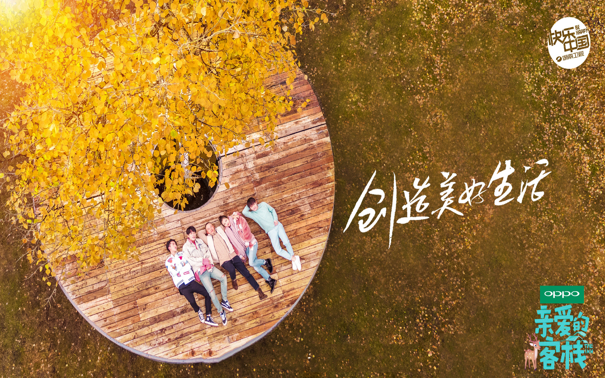

親愛的·客棧(第二季)
《親愛的·客棧第二季》是湖南衞視推出的經營體驗類觀察真人秀節目，由劉濤、王珂、王鶴棣、武藝、馬思超、沈月擔任固定經營者。
《親愛的·客棧第二季》創新就在於從客棧的選址到設計、搭建，都全部有老闆和員工們參與其中，親身體驗。主體採用“地球倉”設計， 從卧室到廚房再到公共區域，基本上都是用“地球倉”搭建而成。而這些“地球倉”都是在長沙組建完成，直接運送到內蒙古阿爾山， 在當地可直接搭建使用。
客人入住之後，老闆夫婦和員工利用當地自然資源，帶着客人一起開發客棧周邊旅遊路線。節目結束後，經營的客棧則留給當地人作為發展旅遊產業， 成為推動當地經濟的心意之作。